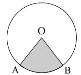
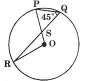
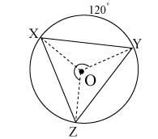

Synopsis
Circle
A circle with centre O and radius r cm is the figure consisting of all those points of a plane through O which are ate constant distance r cm from O.
Radius
A line segment with one end point at the centre of the circle and the other on the circle is called a radius of the circle.
All radii of a circle are equal.
Diameter
A line segment passing through the centre of the circle and which has its end points on the circle is called a diameter of the circle.
Clearly, diameter = \( 2 \times radius \) .
Chord
A line segment with its end point, lying on a circle is called a chord of the circle.
A diameter is the longest chord as circle.
Secant
A secant is a line that intersects the circle in two distinct points.
Semicircle
A diameter of a circle divides the circle into two equal parts. Each part is called a semicircle.
Arc
An arc is the part of the circle included between two points on the circumference of the circle.
An arc is called a minor arc or a major arc depending on whether its length is less than or greater than the length of the semicircle. Thus, in the given figure, AXB is the minor arc and AYB is the major arc. We denote an arc AB by \( \widehat{AB} \) .
We have minor arc \( \widehat{AB} = \widehat{AXB}, \) , major \( \widehat{AB} = \widehat{AYB}, \)
Degree measure of an arc
The angle formed at the centre of a circle by two radii drawn from the end points of an arc is called the central angle of the arc.
The measure of this central angle in degrees is called the degree measure of the arc.
Thus, in the given figure , \( \widehat{AB} \) is an arc of a circle with centre O, \( \angle{AOB} \) is the central angle and the measure of \( \angle{AOB} \) in degree is called the degree measure or simply the measure of arc AB, written as \( m \widehat{AB} = x^{ \circ} \) .
Congurent arcs
Two arcs of a circle are congruent if either of them can be superposed on the other so as to cover it exactly.
Arc lengths of congruent arcs are equal.
the degree measure of congruent arcs is the same.
Circumference
The perimeter of a circle is called its circumference.
Sector of a circle
A sector of a circle is a region enclosed by an arc of the circle and the two radii to its end points.
Thus, in the given figure, region OAB is a sector.
\( \angle{AOB} \) is called the central angle or the sector angle.

Segment of a circle
A chord AB of a circle with centre 0 divides the circular region into A two parts. Each part is called a segment of the circle.
Thus, a segment of a circle is the region bounded by an arc of the circle and the chord. The region containing the centre of the circle is called the major segment and the part which does not contain the centre is called the minor segment.
Theorem
Theorem 1
The straight line drawn from the centre of a circle to the midpoint of a chord (which does not pass through the centre) is at right angles to the chord.
Given Let ABC be a circle with centre O. The straight line OM joins O to the midpoint M of the chord AB.
To prove OM is perpendicular to AB.
Construction join O to A and B.
proof:
| 1 |
In \( \triangle{AOM} \) and \( \triangle{BOM}, \)
\( \begin{align} \begin{array}{ccc} (a) \ OA = OB & (a) \ \text{Radii of the same circle} \\\\ (b) \ OM = OM & (b) \ \text{Common side} \\\\ (c) \ AM = MB & (c) \ \text{M is the midpoint of AB} \end{array} \end{align} \)
|
| 2 |
\( \triangle{AOM} = \triangle{BOM} \)
|
By SSS criterion of congruency |
| 3 |
\( \angle{AMO} = \angle{BMO} \)
|
CPTC |
| 4 |
\( \angle{AMO} + \angle{BMO} = 180^{ \circ} \)
|
Linear pair |
| 5 |
\( \angle{AMO} = \angle{BMO} = 90^{ \circ} \)
|
From statements 3 and 4 |
| 6 |
\( OM \perp AB (proved) \)
|
From statement 5 |
Theorem 2:
(Converse of Theorem 1) the perpendicular drawn from the centre of a circle to a chord bisects the chord.
Given Let ABC be a circle with centre 0. OM is drawn perpendicular to chord AB.
To prove OM bisects AB, i.e., AM = MB.
Construction Join 0 to A and B.
proof:
| 1 |
In \( \triangle{AOM} \) and \( \triangle{BOM}, \)
\( \begin{align} \begin{array}{ccc} (a) \ OA = OB & (a) \ \text{Radii of the same circle} \\\\ (b) \ OM = OM & (b) \ \text{Common side} \\\\ (c) \angle{OMA} = \angle{OMB} = 90^{ \circ} & (c) \ OM \perp AB \end{array} \end{align} \)
|
|
| 2 |
\( \triangle{OAM} = \triangle{OBM} \)
|
By RHS criterion of congruency |
| 3 |
\( AM = MB (proved) \)
|
CPTC |
Theorem 3:
There can be one and only one circle passing through three noncollinear points.
Given Let A, B and C be three noncollinear points.
To prove One and only one circle can be drawn through A, B and C.
construction: Join A to B and B to C. Draw PM and QN, the perpendicular bisectors of AB and BC respectively. Let PM and QN intersect at 0. Joint 0 to A, B and C.
proof:
| 1 |
O lies on the perpendicular bisector PM of AB
\( \therefore \) OA = OB |
Every point on the perpendicular bisector of a line segment is equidistant from the extremities of the line segment. |
| 2 |
Also, O lies on the perpendicular bisector QN of BC
\( \therefore OB = OC \)
|
As above |
| 3 |
\( \therefore OA = OB = OC = r \)
|
From statement 1 and 2 |
| 4 |
If a circle is drawn with O as centre and r as radius, it will pass through A, B and C. |
From statement 3 |
| 5 |
Also, O is the only point which is equidistant from A, B and C |
MP and NQ intersect at only one point, O. |
| 6 |
Therefore, only one circle can be drawn through A, B and C. (proved) |
From statement 4 and 5 |
Theorem 4:
Equal chords of a circle are equidistant from the centre.
Given A circle with centre 0 in which chord AB = chord CD. Also, \( OM \perp AB \) and \( ON \perp CD \)
To prove AB and CD are equidistant from the centre O, i.e., OM = ON
Construction: Join O to A and C
proof:
| 1 |
\( AM = \frac{1}{2} AB \)
|
Perpendicular from the centre bisects the chord. |
| 2 |
\( CN = \frac{1}{2} CD \)
|
As above |
| 3 |
AB = CD |
Given |
| 4 |
AM = CN |
From statement 1, 2 and 3 |
| 5 |
In \( \triangle{OAM} \) and \( \triangle{OCN} \)
\( \begin{align} \begin{array}{ccc} (a) \ OA = OC \ \ \ \ \ \ \text{Radii of the same circle are equal} \\\\ (b) \ AM = CN \ \ \ \ \ \ \ From statement 4 \\\\ (c) \ \angle{OMA} = \angle{ONC} = 90^{ \circ} \ \ \ \ \ \ \ \ \ OM \perp AB \ and \ ON \perp CD \end{array} \end{align} \)
|
|
| 6 |
\( \triangle{OAM} \equiv \triangle{OCN} \)
|
By RHS criterion of congruency |
| 7 |
OM = ON |
CPCTC |
| 8 |
Hence, AB and CD are equidistant from the centre O. (proved) |
From statement 7. |
Theorem 5:
(Converse of theorem 4) Chords of a circle, which are equidistant from the centre, are equal.
Given A circle with centre O, which two chords AB and CD are equidistant from the centre O, i.e., OM = ON, where \( OM \perp AB \) and \( ON \perp CD \)
tabindexo prove AB = CD
proof:
| 1 |
In \( \triangle{AOM} \) and \( \triangle{CON}, \)
\( \begin{align} \begin{array}{ccc} (a) \ OM = ON & Given \\\\ (b) \ OA = OC & \text{Radii of the same circle are equal} \\\\ (c) \ \angle{OMA} = \angle{ONC} = 90^{ \circ} & Given \end{array} \end{align} \)
|
|
| 2 |
\( \triangle{AOM} \cong \triangle{CON} \)
|
By RHS criterion of congruency |
| 3 |
AB = CN |
CPTC |
| 4 |
\( AM = \frac{1}{2} AB \)
|
Perpendicular from the centre bisects the chord |
| 5 |
\( CN = \frac{1}{2} CD \)
|
As in statement 4. |
| 6 |
\( \frac{1}{2} AB = \frac{1}{2} CD \)
\( \Rightarrow AB = CD. (proved) \)
|
From statement3. 4 and 5 |
Important Results:
-
In congurent circles
-
Equal chords are equidistant from their respective centres. So, if AB = CD then OM = PN
-
Chords equidistant from their respective centre are equal. So if OM = PN then AB = CD
-
If two circles intersect, the line segment joining the two points of intersection is a common chord of both the circles.
Here, AB is a common chord of the two circles having centre at O and P.
Arc
An arc is a continuous part of the circumference of a circle. In (a) below, arc AB is denoted as \( \widehat{AB} \) .
Generally, a chord divides the circumference of a circle into two unequal parts. The greater one is known as the major arc and the shorter one is known as the minor arc.
An arc is usually named anticlockwise.
In (b), \( \widehat{BDA} \) is the major arc and \( \widehat{ACB} \) is the minor arc. \( \widehat{BDA} \) can also be written as major \( \widehat{AB} \) , and \( \widehat{ACB} \) can also be written as minor \( \widehat{AB} \) .
If both the arcs are equal, each is known as a semicircle.
In (c), \( \widehat{ACB} \) and \( \widehat{BDA} \) are both semicircles.
Segment
A chord of a circle divides the area of the circle into two parts. Each Part is known as a segment of the circle.
The region bounded by the chord and the major arc is known as the major segment, and the region enclosed between the chord and the minor arc is known as the minor segment.
Here, the region enclosed between the chord AB and \( \widehat{BDA} \) is the major segment, and the area enclosed between the chord AB and \( \widehat{ACB} \) is the minor segment.
Angle at the centre:
If two radii are drawn to join the extermities of an arc to the centre of a circle, then the angle formed between those radii is known as the angle subtened by the arc at the centre of the circle. In the figure (a). \( \widehat{ACB} \) subtends \( \angle{AOB} \) at the centre, and in the figure (b), \( \widehat{BDA} \) subtends reflex \( \angle{AOB} \) at the centre.
Angle at the circumference
In a circle, if two lines are drawn to join the extremities of an arc to any point on the remaining part of the circumference, then the angle formed between those two lines is known as the angle subtended by the arc at the circumference of the circle.
In the figure (a) , minor \( \widehat{AB} \) subtends \( \angle{ADB} \) , and in the figure (b), major \( \widehat{AB} \) subtends \( \angle{ACB} \) at the circumference of the circle.
Theorem 6:
The angle that an arc of a circle subtends at the centre is double that which it subtends at any point on the remaining part of the circle.
Given In a circle with centre O, \( \widehat{APB} \) subtends \( \angle{AOB} \) at the centre 0 \( \angle{ACB} \) at a point C on the remaining part of the circle.
In the figure (a), \( \widehat{APB} \) is a minor arc and it subtends \( \angle{AOB} < 180^{ \circ} \) at O.
In the figure (b), \( \widehat{APB} \) is a semicircle and it subtends \( \angle{AOB} = 180^{ \circ} \) at O.
In the figure (c), \( \widehat{APB} \) is a major arc and it subtends reflex \( \angle{AOB} < 180^{ \circ} \) at O.
To prove \( \angle{AOB} = 2 \angle{ACB} \) , when \( \widehat{APB} \) is a minor arc or semicircle.
Reflex \( \angle{AOB} = 2 \angle{AOB} = 2 \angle{ACB} \) , when \( \widehat{APB} \) is a major arc.
Construction Join C to 0 and produce it to a point D.
proof:
| 1 |
In \( \triangle{AOC}, \)
\( \begin{align} \begin{array}{ccc} (a) \ OC= OA & \text{Angles opposite to the equal sides of an isosceles triangle are equal} \\\\ (b) \ \angle{OAC} = \angle{OCA} & \text{Exterior angle of a triangle is equal to the sum of its interior opposite angles.} \\\\ (c) \ \angle{AOD} = \angle{OAC} + \angle{OCA} = \angle{OCA} + \angle{OCA} = 2 \angle{OCA} & \text{From statement (b)} \end{array} \end{align} \)
|
Radii of the same circle |
| 2 |
Similarly, in \( \triangle{BOC} \)
\( \angle{BOD} = 2 \angle{OCB} \)
|
Proceeding as above. |
| 3 |
In the figure (a) and (b),
\( \begin{align} \angle{AOB} = \angle{AOD} + \angle{BOD} \\\\[3pt]
= 2 \angle{OCA} + 2 \angle{OCB} \\\\[3pt]
= 2( \angle{OCA} + \angle{OCB}) \\\\[3pt]
= 2 \angle{ACB}. (proved) \end{align} \)
|
From statements 1 (c) and 2 |
| 4 |
Similarly, in the figure (c),
reflex \( \angle{AOB} = 2 \angle{ACB} \)
(proved) |
Proceeding as above. |
Theorem 7:
Angles in the same segment of a circle are equal.
Given In a circle with centre O, \( \angle{ACB} \) and \( \angle{ADB} \) are in the same segment.
To prove \( \angle{ACB} = \angle{ADB} \)
Construction join O to A and B.
proof:
| 1 |
\( \widehat{APB} \) subtends \( \angle{AOB} \) at the centre and \( \angle{ACB} \) at a point C on the remaining part of the circumference.
\( \therefore \angle{AOB} = 2 \angle{ACB} \)
|
Angle at the centre is twice the angle at a point on the remaining angle at a point on the remaining part of the circumference |
| 2 |
Similarly, \( \angle{AOB} = 2 \angle{ADB} \)
|
Proceeding as above. |
| 3 |
\( \angle{ACB} = \angle{ADB} (proved) \)
|
From statements 1 and 2 |
Theorem 8:
An angle in a semicircle is a right angle.
Given In a circle with centre O, AB is a diameter. Semicircle \( \widehat{APB} \) subtends \( \angle{ACB} \) at a point C on the remaining part of the circumference.
To prove \( \angle{ACB} = 90^{ \circ} \)
proof:
| 1 |
Semicircle \( \widehat{APB} \) subtends \( \angle{AOB} \) at the centre and \( \angle{ACB} \) at the circumference.
\( \therefore \angle{AOB} = 2 \angle{ACB} \)
|
Angle at the centre is twice the angle at the circumference |
| 2 |
But \( \angle{AOB} = 180^{ \circ} \)
|
AOB is a straight line. |
| 3 |
\( \therefore \angle{ACB} = 180^{ \circ} \)
\( \Rightarrow \angle{ACB} = 90^{ \circ} (Proved) \)
|
From statement 1 and 2 |
Theorem 9:
If two chords are equal, they cut off equal arcs.
Given A circle with O, where chord AB = chord CD.
Tp prove \( \widehat{AB} = \widehat{CD} \)
Construction join O to A, B, C and D
proof:
| 1 |
In \( \triangle{AOB} \) and \( \triangle{COD} \) ,
\( \begin{align} \begin{array}{ccc} (a) \ AB = CD & Given \\\\ (b) \ OA = OC & \text{Radii of the same circle} \\\\ (c) \ OB = OC & \text{Radii of the same circle} \end{array} \end{align} \) . |
|
| 2 |
But \( \triangle{AOB} cong \triangle{CO} \)
|
By SSS criterion of congruency |
| 3 |
\( \angle{AOB} = \angle{COD} \)
|
CPCTC |
| 4 |
\( \widehat{AB} = \widehat{CD} (proved) \)
|
If two arcs subtends equal angles at the centre, they are equal |
Theorem 10:
(Converse of theorem 14) In a circle, equal arcs are cut off by equal chords.
Given in a circle with centre O, \( \widehat{AB} = \widehat{CD} \)
To prove Chord AB = chord CD
Construction join O to A, B, C and D
proof:
| 1 |
In \( \widehat{AB} = \widehat{CD} \ \ \therefore \angle{AOB} = \angle{COD} \)
|
Equal arcs subtend equals angles at the centre. |
| 2 |
In \( \triangle{AOB} \) and \( \triangle{COD} \)
\( \begin{align} \begin{array}{ccc} a) \ \ \ \angle{AOB} = \angle{COD} & \text{From statement 1} \\\\ \ (b) \ OA = OC & \text{Radii of the same circle} \\\\ (c) \ OB = OD & \text{Radii of the same circle} \end{array} \end{align} \)
|
| 3 |
\( \triangle{AOB} \cong \triangle{COD} \)
|
By SAS criterion of congruency |
| 4 |
AB = CD (proved) |
CPCTC |
Solved examples
Example 1:
The length of the perpendicular from the centre of a circle to a chord is 9cm. If the length of the chord is 24 cm, find the radius and the circumference of the circle.
Solution:
Length of chord \( \overline{AB} \) = 24 cm
Perpendicular distance from the centre, \( \overline{OT} \) = 9cm.
To find: \( \overline{OB} \) , the radius of the circle.
\( \triangle{OTB} \) is a right angled triangle as \( \angle{OTB} = 90^{ \circ} \)
\( \therefore \overline{OB}^2 = \overline{OT}^2 + \overline{TB}^2 \) [by pythagoras theorem]
\( = (9)^2 + (12)^2 \) [since \( \overline{TB} = \frac{1}{2} \overline{AB}] \)
= 81 + 144 = 225
\( \overline{OB} = \sqrt{225} = 15 \)
The radius of the circle is 15 cm.
To find: Circumference.
Circumference = \( 2 \pi r = 2 \times \frac{22}{7} \times 15 = 94.29 \ cm \)
Example 2:
The length of a chord in a circle is 8 cm.. The perpendicular distance from the centre of the circle to the chord is 3 cm.
Find
the diameter of the circle and
the circumference of the circle.
Solution:
The length of the chord \( \overline{AB} = 8 \ cm \)
\( \therefore \overline{DB} = \frac{8}{2} cm = 4 \ cm \)
The perpendicular distance from the centre, \( \overline{OD} = 3 \ cm \)
It is required to find the diameter and the circumference.
Now, \( \overline{OB}^2 = \overline{OD}^2 + \overline{DB}^2 \ \ \ [Pythagoras theorem] \)
\( = (3)^2 + (4)^2 = 9 + 16 = 25 \)
\( \therefore \overline{OB}^2 = 25 \)
Diameter of the circle = \( 2 \pi r \ units \ or \ \pi \ d \ units. \)
\( = 2 \times \frac{22}{7} \times 5 \ cm \ \left[ \pi = \frac{22}{7} \right] \)
= 31.42 \ cm
\( \therefore \) The circumference of the circle = 3.142 (approximately)
Example 3:
The radius of a circle is 25 c,. A chord of length 40 cm is inserted in it. What is the shortest distance from the centre to the chord?
Solution:
The length of the chord \( \overline{AB} = 40 \ cm \)
Perpendicular distance from \( \overline{AB} \)
\( \begin{align} \overline{MB} = 20 \ cm \\\\[3pt]
\therefore \overline{OM}^2 = \overline{OB}^2 - \overline{MB}^2 \ \ \ [Pythagoras \ theorem] \\\\[3pt]
\overline{OM}^2 = (25)^2 - (20)^2 \\\\[3pt]
= 625 - 400 \\\\[3pt]
\therefore \overline{OM} = \sqrt{225} \\\\[3pt]
\therefore \overline{OM} = 15 \end{align} \)
\( \therefore \) The perpendicular from the centre to the chord is 15 cm.
The perpendicular distance is the shortest distance from a point to a line.
Hence, shortest distance from the centre to the chord is 15 cm.
Example 4:
A circle has a radius of 25 cm. Find the distance between the two parallel chords which are 48 cm and 40 cm in length if they lie on
-
opposite sides of the centre
-
the same side of the centre.
Solution:
Let AB || CD and AB = 48 cm and CD = 40 cm.
\( \therefore \) AM = 24 cm and CN = 20 cm.
AO = CO = 25 cm
\( OM = \sqrt{AO^2 - AM^2} = \sqrt{(25^2 - 24^2) cm^2} = \sqrt{(24 + 25) (24 - 25) cm^2} = \sqrt{49 cm^2} = 7 \ cm \)
\( ON = \sqrt{CO^2 - CN^2} = \sqrt{(25^2 - 20^2) cm^2} = \sqrt{(25 + 20) (25 - 20) cm^2} = \sqrt{(45 \times 5) cm^2} = \sqrt{ (9 \times 25) cm^2} = 15 \ cm \)
-
Distance between AB and CD is MN = MO + ON = (7 + 15) cm = 22 cm, when the chords lie on opposite sides of the centre.
-
Distance between AB and CD is MN = ON - OM = (15 - 7) cm = 8 cm, when the chords lie on the same side of the centre.
Example 5:
In a circle with centre O, the points X, Y and Z are marked on its given m \( \widehat{XY} = 83^{ \circ} \) and \( \widehat{YZ} = 97^{ \circ} \)
-
\( \angle{XOY} \)
-
\( \angle{YOZ} \)
-
\( \angle{XOZ} \) and
-
\( m \widehat{XZ} \)
Solution:
-
Since \( m \widehat{XY} = 83^{ \circ}, \ \angle{XOY} = 83^{ \circ} \)
-
Similarly \( m \widehat{YZ} = 97^{ \circ}, \ \angle{YOZ} = 97^{ \circ} \)
-
\( \angle{XOZ} = \angle{XOY} + \angle{YOZ} = 83^{ \circ} + 97^{ \circ} = 180^{ \circ} \)
-
\( m \widehat{XZ} = \angle{XOZ} = 180^{ \circ} \)
Example 6:
In the figure \( \overline{CD} || \overline{OE} \) and m \widehat{DE} = 40^{ \circ} Find
-
\( \angle{ODC} \)
-
\( m \angle{CD} \)
-
\( m \angle{CE} \)
Solution:
\( m \widehat{DE} = 40^{ \circ} \)
\( \therefore \angle{DOE} = 40^{ \circ} \ [m \widehat{DE} = \angle{DOE}] \)
-
\( \angle{ODC} = 40^{ \circ} \) [alternative angle to \( \angle{DOE}. \overline{DC} || \overline{EO} \ and \ \overline{OD} \) is the transversal]
-
\( m \widehat{CD} = \angle{COD} \)
\( \angle{ODC} = 40^{ \circ} \) . Therefore \( \angle{OCD} = 40^{ \circ} \) [since \( \overline{OC} \) and \( \overline{OD} \) are radii of the same circle, \( \triangle{OCD} \) is isosceles]
\( \begin{align} \therefore \angle{COD} = 180^{ \circ} - ( \angle{OCD} + \angle{ODC}) \\\\[3pt]
= 180^{ \circ} - (40^{ \circ} + 40^{ \circ}) \\\\[3pt]
= 180^{ \circ} - 80^{ \circ} \\\\[3pt]
= 100^{ \circ} \\\\[3pt]
\therefore m \widehat{CD} = 100^{ \circ} \end{align} \)
-
\( \angle{XOZ} = \angle{XOY} + \angle{YOZ} = 83^{ \circ} + 97^{ \circ} = 180^{ \circ} \)
-
\( m \widehat{XZ} = \angle{XOZ} = 180^{ \circ} \)
-
\( m \widehat{CE} = \angle{EOD} + \angle{DOC} \)
\( = 40^{ \circ} + 100^{ \circ} = 140^{ \circ} \)
\( \therefore \angle{ODC} = 40^{ \circ}, \ m \widehat{CD} = 100^{ \circ} \ and \ m \widehat{CE} = 140^{ \circ} \)
Example 7:
Calculate the value of z in the figure (a) and (b)
Solution:
Given in the figure (a) \( \angle{BAC} \) (Angle at a point on the circle) = \( 75^{ \circ} \)
To calculate: Angle at the centre i.e., \( \angle{BOC} \)
| Method 1 |
Method 2 |
\( \angle{BAC} \) and \( \angle{BOC} \) are angles
subtended by the same are BSC
\( \therefore \angle{BOC} = 2 \angle{BAC} \)
[angle at the centre = twice the angle]
at any point on the circle
\( \therefore \angle{BOC} = 2 \times 75^{ \circ} \)
\( \therefore \angle{BOC} = 150^{ \circ} \)
|
\( \angle{BAC} = \frac{1}{2} = m \widehat{BSC} \)
But \( m \widearc{BSC} \) = central angle x.
\( \therefore \angle{BAC} = \frac{1}{2} \times z \)
i.e., \( 75^{ \circ} = \frac{1}{2} \times z \)
or \( z = 75^{ \circ} \times 2 = 150^{ \circ} \)
i.e., \( \angle{BOC} = 150^{ \circ} \)
|
Given: In the figure (b), \( \angle{PQR} = 80^{ \circ} \) (central angle)
To calculate: Value of angle subtended at Q on the circle i.e., \( \angle{PQR} \)
| Method 1 |
Method 2 |
As \( \angle{PQR} \) and \( \angle{PQR} \) are subtended
by the same arc PSR
\( \angle{PQR} = \frac{1}{2} \angle{PQR} \)
But \( \angle{PQR} = 80^{ \circ} \)
\( \therefore \angle{PQR} = \frac{1}{2} \times 80^{ \circ} = 40^{ \circ} \)
\( \therefore \angle{PQR} = 40^{ \circ} \)
|
Given \( \angle{PQR} = 80^{ \circ} \) (central angle)
\( \therefore m \widearc{PSR} = 80^{ \circ} \)
\( \therefore 80^{ \circ} = 2 z \)
or \( z = \frac{80^{ \circ}}{2} = 40^{ \circ} \)
i.e., \( \angle{PQR} = 40^{ \circ} \)
|
Example 8:
In circle O figure, \( \angle{PQR} = 45^{ \circ} \)
Show that \( \overline{RO} \perp \overline{PO} \)
Solution:
The angles PQR and PQR have a common are PR. PQR is the inscribed angle and \( \angle{PQR} \) is the central angle.
Hence, \( m \widearc{PR} = \angle{PQR} \times 2 = 45^{ \circ} \times 2 = 90^{ \circ} \)
i.e., \( \angle{PQR} = 90^{ \circ} [ \therefore \angle{PQR} = m \widearc{PR} \) ]
\( \overline{PO} \perp \overline{RO} \)
Example 9:
\( \triangle{XYZ} \) is inscribed in a circle O, \( m \widearc{XY} = 120^{ \circ}, \ m \widearc{XZ} = 140^{ \circ} \)
-
\( \angle{XYZ} \)
-
\( \angle{YXZ} \)
-
\( \angle{XZY} \)
Solution:
-
To calculate: \( \angle{XYZ} \)
\( \angle{XYZ} = \frac{1}{2} m \widehat{XZ} \) [since the inscribed angle Y intercepts the \( \widehat{XY} \) ]
\( = \frac{1}{2} \times 140^{ \circ} \)
\( \therefore \angle{XYZ} = 70^{ \circ} \)
-
To calculate : \( \angle{XYZ} \)
Now
\( \begin{align} m \widehat{YZ} = 360^{ \circ} - (m \widehat{XY} + m \widehat{YZ}) \ \ \ \ [since \ m \widehat{XY} = \angle{XOY} ] \\\\[3pt]
= 360^{ \circ} - (120^{ \circ} + 140^{ \circ}) \ \ \ \ \ m \widehat{XZ} = \angle{XOZ} \ and \ angle \\\\[3pt]
= 360^{ \circ} - 260^{ \circ} \ \ \ \ \ around \ O \ is \ 360^{ \circ}] \\\\[3pt]
\therefore m \widehat{YZ} = 100^{ \circ} \\\\[3pt]
\therefore \angle{XYZ} = \frac{1}{2} \times m \widehat{YZ} = \frac{1}{2} \times 100^{ \circ} \\\\[3pt]
\angle{YXZ} = 50^{ \circ} \end{align} \)
-
To calculate \( \angle{XYZ} \)
\( \angle{XYZ} = \frac{1}{2} \times m \widehat{XY} = \frac{1}{2} \times 120^{ \circ} \)
\( \angle{XZY} = 60^{ \circ} \)
\( \therefore \angle{YXZ} = 50^{ \circ} \angle{ZYX} = 70^{ \circ} \ and \ \angle{XZY} = 60^{ \circ} \)
Example 10:
In the given figure calculate the value of \( q^{ \circ} \)

Solution:
Given: \( \angle{ABC} = 55^{ \circ} \)
To calculate: \( \angle{CAB} \)
In \( \triangle{ABC} \angle{ACB} = 90^{ \circ} \) [angle in the semi circle]
\( \begin{align} \angle{CAB} = 180^{ \circ} - ( \angle{ACB} + \angle{ABC}) \\\\[3pt]
= 180^{ \circ} - (90^{ \circ} + 55^{ \circ}) = 180^{ circ} - 145^{ \circ} \\\\[3pt]
\angle{CAB} = 35^{ \circ} = q^{ \circ} \end{align} \)
Example 11:
In circle O, \( \angle{PQR} = 100^{ \circ} \) and \( \overline{PQ} \) is a diameter. Calculate the value of \( \angle{RSQ} \)

Solution:
Given:
\( \begin{align} \angle{PQR} = 100^{ \circ} \\\\[3pt]
\therefore \angle{ROQ} = 180^{ \circ} - 100^{ \circ} \\\\[3pt]
\angle{ROQ} = 80^{ \circ} = m \widehat{RQ} \\\\[3pt]
\therefore \angle{RSQ} = \frac{1}{2} \times m \widehat{RQ} = \frac{1}{2} \times 80^{ \circ} \end{align} \)
\( \angle{RSQ} = 40^{ \circ} \) [since the inscribed angle RSQ is half the measure of the central angle ROQ.]
Example 12:
In circle O, \( \angle{XOY} = 135^{ \circ} \) Calculate the measure of \( \angle{xzy} \)
Solution:
Given:
\( \angle{XOY} = 135^{ \circ} \)
\( \widearc{XY} \) is the intercepted arc of angle XZY and XOY
\( \angle{XZY} \) is the inscribed angle and \( \angle{XOY} \) is the central angle.
\( \begin{align} \therefore \angle{XZY} = \frac{1}{2} \times \angle{XOY} \\\\[3pt]
= \frac{1}{2} \times 135^{ \circ} \\\\[3pt]
\angle{XZY} = 67.5^{ \circ} \end{align} \)
Example 13:
In the given figure, O is the centre of the circle, and \( \angle{OAB} = 25^{ \circ} \) and \( \angle{OCB} = 35^{ \circ} \)
Solution:
Join O to B. In \( \triangle{OAB}, \ OA = OB \) (radii of the same circle)
\( \therefore \angle{OAB} = \angle{OBA} = 25^{ \circ} \)
Similarly, In \( \triangle{OBC}, \ \angle{OBC} = \angle{OCB} = 35^{ \circ} \)
\( \angle{ABC} = \angle{OBA} + \angle{OBC} = 25^{ \circ} + 35^{ \circ} = 60^{ \circ} \)
\( \therefore \angle{AOC} = 2 \angle{ABC} = 2 \times 60^{ \circ} = 120^{ \circ} \) , as angle at the centre is double the angle at the circumference.
Example 14:
A triangle ABC has been inscribed in a circle. The bisectors of \( \angle{A}, \ \angle{B} \) and \( \angle{C} \) meet the circle at P, Q and R respectively. If \( \angle{BAC} = 50^{ \circ} \) , find \( \angle{QPR} \)
Solution:
\( \angle{BAP} = \angle{PAC} = 25^{ \circ}, \ QBC = \frac{1}{2} \angle{ABC} \)
\( \angle{RCB} = \frac{1}{2} \angle{ACB} \)
(as AP, BQ and CR bisect \( \angle{BAC}, \ \angle{ABC} \) and \( \angle{ACB} \) respectively).
\( \angle{BQP} = \angle{BAP} = 25^{ \circ}, \ \angle{PRC} = \angle{PAC} = 25^{ \circ}, \ QRC = QBC = \frac{1}{2} \angle{ABC} \) and \( \angle{RQB} = \angle{RCB} = \frac{1}{2} \angle{ACB} \)
(as the angles in the same segment of a circle are equal)
\( \begin{align} \angle{QPR} = 180^{ \circ} - ( \angle{RQP} + \angle{QRP}) \\\\[3pt]
= 180^{\ \circ} \left( \frac{1}{2} \angle{ACB} + 25^{ \circ} + \frac{1}{2} \angle{ABC} + 25^{ \circ} \right) \\\\[3pt]
= 180^{ \circ} - \frac{1}{2} ( \angle{ACB} + \angle{ABC}) - 50^{ \circ} = 130^{ \circ} - \frac{1}{2} (180^{ \circ} - \angle{BAC}) \\\\[3pt]
= 130^{ \circ} - \frac{1}{2} (180^{ \circ} - 50^{ \circ}) \\\\[3pt]
= 130^{ \circ} - \frac{1}{2} (130^{ \circ}) = 130^{ \circ} - 65^{ \circ} \end{align} \)
Example 15:
Two congruent circles intersect at P and Q. A line segment RS is drawn through Q. Show that P is equidistant from R and S.
Construction join P to R, Q and S. A and B are two points lying on the circle, as shown.
Proof:
| The common chord PQ cuts off \( \widehat{PAQ} \) in one circle and \( \widehat{PBQ} \) in the other circle. So, \( \widehat{PAQ} = \widearc{PBQ} \)
|
In congruent circles, equal chords cut off equal arcs |
|
\( \angle{PRQ} = \angle{PSQ} \)
|
In congruent circles, equal arcs subtend equal angles at the circumference |
| In \( \triangle{PRS}, \) PR = RS |
In a triangle, sides opposite to equal angles are equal. |
| P is equidistant from R and S. |
From statement 3. |